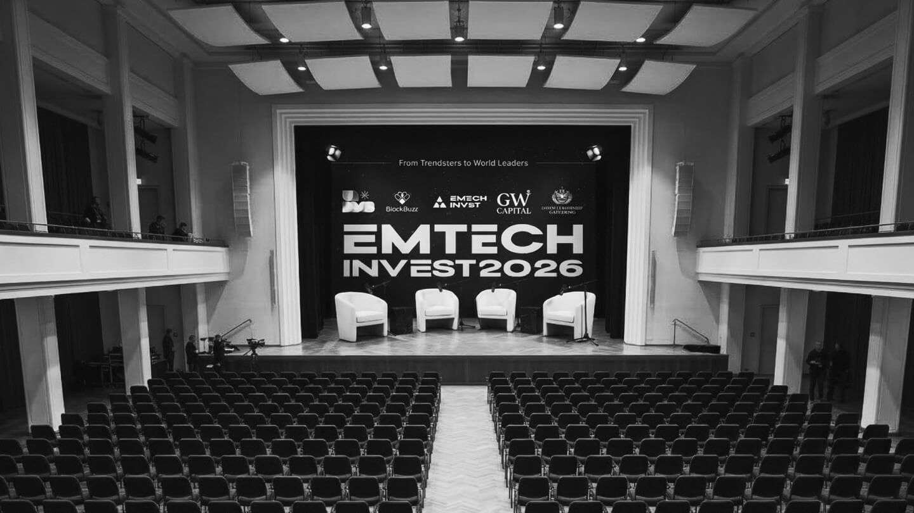
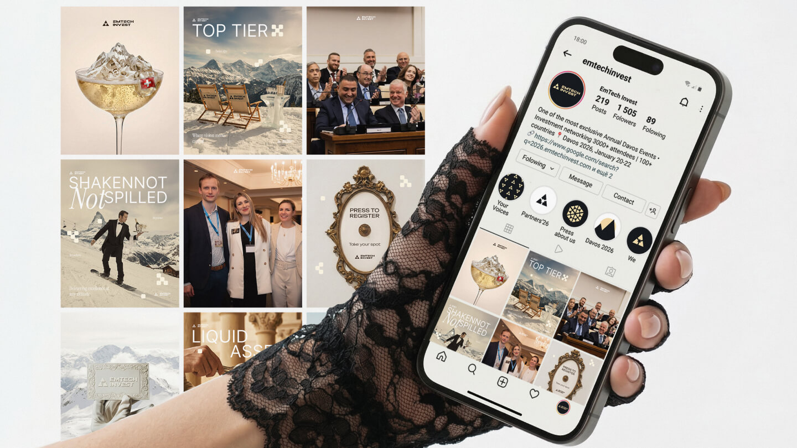
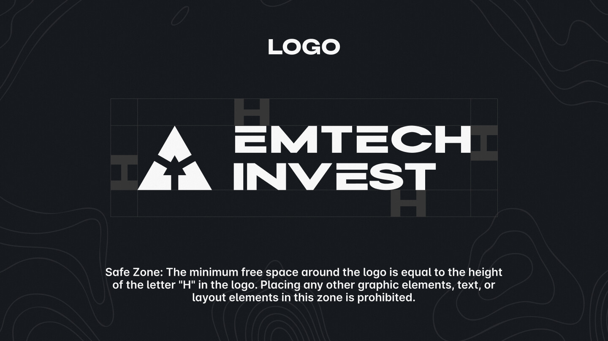
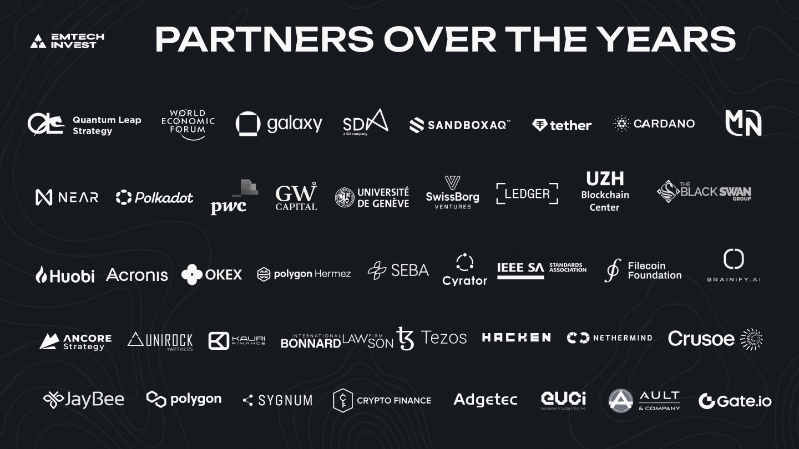
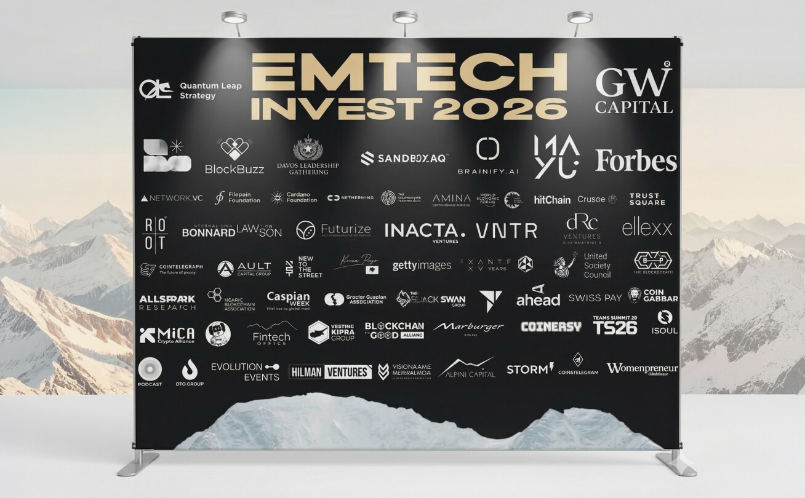
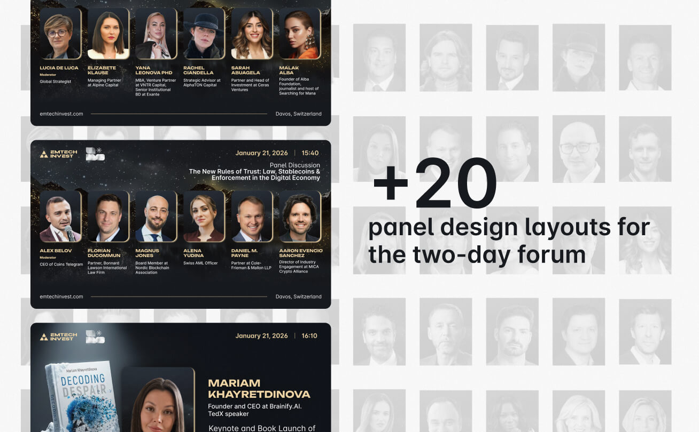
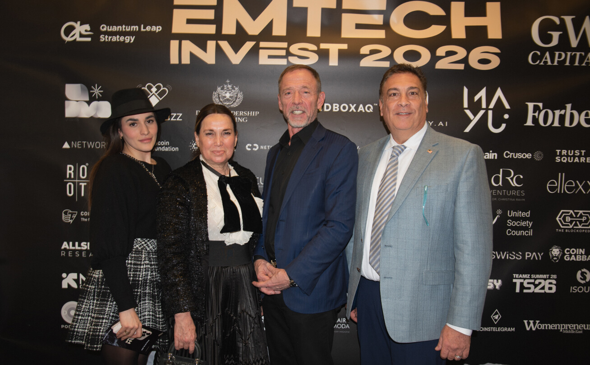
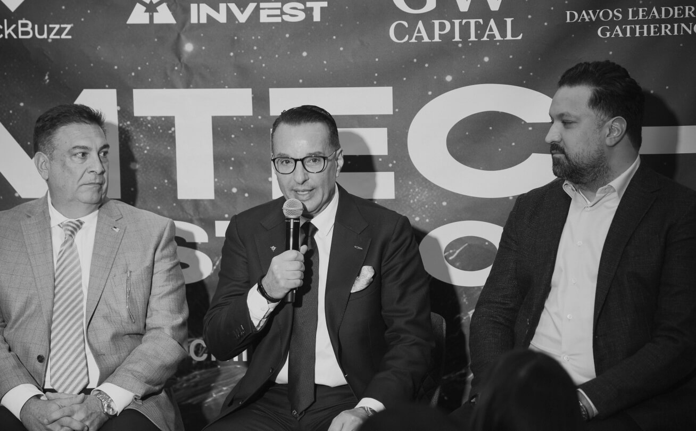

EmTech Invest × Davos
An investment event at Davos with no brand guidelines, two decision-makers who couldn't articulate what they wanted, 66 participants with individual demands, and a six-week window. My job was to turn ambiguity into a system — and keep the designer moving while the chaos was ongoing.
Why
EmTech Invest is a two-person Swiss company running closed-door investment events for tech leaders and C-suite executives. They had no brand system — only a few inconsistent assets from a previous designer. When they brought in a graphic designer to handle Davos, the brief was clear in one way only: the output had to look like it belonged at WEF. Everything else — visual direction, tone, priorities, what to make first — was undefined. Vague briefs at this scale don't produce bad design. They produce paralysis.
What
I came in as art director. My role was upstream of execution: interpreting what the client actually needed versus what they asked for, defining the visual and communication system the designer could build within, and making prioritization decisions when everything felt equally urgent. We built the brand from near-zero — color system, typography, tone of voice, the visual logic that made a fintech event feel Swiss without feeling sterile. From that foundation: 66 individual participant profiles, press wall, banners, badges, website assets, social content across the full event lifecycle.
How
The real design problem wasn't visual — it was structural. The client operated without clear internal alignment: briefs arrived fragmented, changed mid-execution, and came with no hierarchy of importance. My job was to absorb that ambiguity before it reached the designer. I translated each incoming request into a specific, actionable task with a clear definition of done. I set the sequence — what gets finished before anything else moves — so that constant incoming changes didn't collapse the timeline. Participant profiles alone were a chaos management exercise: photos missing, retouching requests, last-minute bio edits, dropouts. Each had a path through the system. The event happened. Everything was ready.
What it looks like








What we delivered
Each individual, many requiring photo research and retouching
Visual system built from scratch — color, type, tone, logic
Brief to post-event content, with constant scope changes throughout
Attendees, sponsors, press — distinct communication logic for each
Need a product thinker on your team?
Tell me about the challenge — I'll tell you where to start.
Get in touch